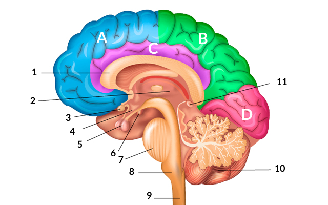

Nota: este site é satirico e como tal pode utilizar piadas ofencivas, se o leitor for particularmente sensivel é aconselhado que não veja o site sozinho.
Pensar é dificil, e encontrar ideias é ainda pior, portanto este tuturial para aprenderes a ter ideias boas.

Assima está uma imagem do cérebro, aquilo que vamos usar para criar as nossas ideias.
Se já tens este processo de pensamento, parabens, este site é inutil para ti.
Se estás a pensar assim, este site é para ti.
Se a tua capacidade matemática não for tão má como a tua capacidade lógica, conseguirás reparar que o processo incorreto é mais longo, tendo 7 passos em vez de 5.
Isto deve-se ao processo que acontece nos passos 2-4 do processo correto:
Este é o processo de criar ideias e avalia-las(isto é, pensar nas consequências antes de aplicar as ideias para o caso destas serem desastrozas).
É um processo que pode demorar tempo mas, ao contrário de ti, as pessoas que o fazem não estão apenas a olhar para o ar, mas estão a conciderar várias ideias.
Esta tabela representa o que acontece com as pessoas que fazem brainsorming e as pessoas que não o fazem (tu).
| Pessoas normais | Tu | |
| Ideia boa | Aceite | Aceite |
| Ideia má | Recusada | Aceite |
Se não sabes a resposta para esta pergunta então tenho de avisar-te que a tua estupidez está à mostra.
Esta pagina inteira esteve a mostrar o que fazer e o que naõ fazer que, resumindo é:
Não a uses. Se queres saber porquê, clica aqui.